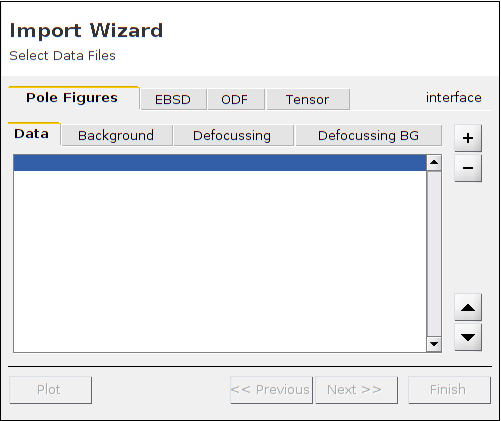
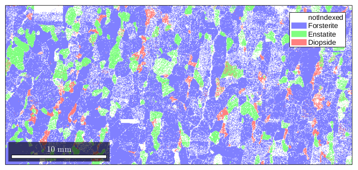
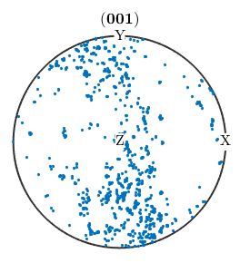
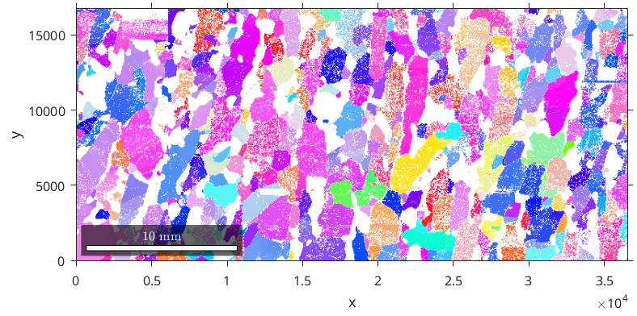
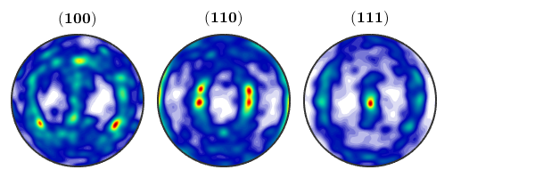

How to detect grains in EBSD data and estimate an ODF.
The following script is automatically generated by the import wizard.
% crystal symmetry CS = {... 'Not Indexed',... crystalSymmetry('m-3m','mineral','Fe'),... crystalSymmetry('m-3m','mineral','Mg')}; % specify file name fname = fullfile(mtexDataPath,'EBSD','85_829grad_07_09_06.txt'); % create an EBSD variable containing the data ebsd = loadEBSD(fname,'CS',CS,'interface','generic' ... , 'ColumnNames', ... { 'Index' 'Phase' 'x' 'y' 'Euler1' 'Euler2' 'Euler3' 'MAD' 'BC' 'BS' 'Bands' 'Error' 'ReliabilityIndex'}, ... 'ignorePhase', 0); % plotting convention plotx2east
First we make a spatial plot of the orientations of the crystals of phase 1
plot(ebsd('Fe')) The colorcoding can be interpreted by the collored (0,0,1) inverse pole figure
oM = ipdfHSVOrientationMapping(ebsd('Fe'))
plot(oM)
Hint: You might want to use the point group
"432" for colorcoding!
oM =
ipdfHSVOrientationMapping with properties:
inversePoleFigureDirection: [1x1 vector3d]
CS1: [24x2 crystalSymmetry]
CS2: [1x1 specimenSymmetry]
colorPostRotation: [1x1 rotation]
colorStretching: 1
whiteCenter: [1x1 vector3d]
sR: [1x1 sphericalRegion]
 Next we reconstruct the grains within our measurements.
grains = calcGrains(ebsd)
grains = grain2d
Phase Grains Mineral Symmetry Crystal reference frame Phase
1 866 Fe m-3m
2 462 Mg m-3m
Properties: GOS, meanRotation
and plot them into our orientation plot
plot(ebsd('Fe')) hold on plot(grains.boundary,'linewidth',1.5)
One can also plot all the grains together with their mean orientation
plot(grains('Fe')) Next we reconstruct an ODF from the EBSD data. Therefore, we first have to fix a kenel function. This can be done by
psi = calcKernel(grains('Fe').meanOrientation)e psi = deLaValeePoussinKernel bandwidth: 62 halfwidth: 4.7°
Now the ODF is reconstructed by
odf = calcODF(ebsd('Fe').orientations,'kernel',psi)
odf = ODF
crystal symmetry : Fe (m-3m)
specimen symmetry: 1
Radially symmetric portion:
kernel: de la Vallee Poussin, halfwidth 4.7°
center: 2063 orientations, resolution: 2.4°
weight: 1
Once an ODF is estimated all the functionallity MTEX offers for ODF analysis and ODF visualisation is available.
plotPDF(odf,[Miller(1,0,0,CS{2}),Miller(1,1,0,CS{2}),Miller(1,1,1,CS{2})],...
'antipodal','silent')
| DocHelp 0.1 beta |